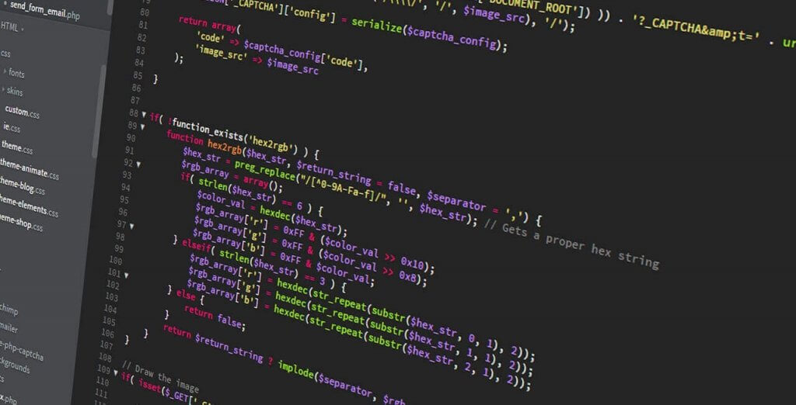
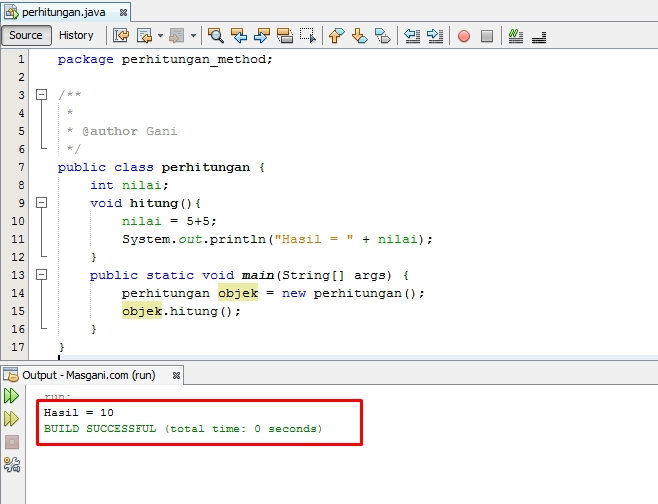

Apa itu Coding?
Coding adalah salah satu tindakan dari langkah-langkah pemrograman dengan menuliskan kode atau skrip dalam bahasa pemrograman. Supaya skrip tersebut dapat dipahami oleh komputer, maka saat proses coding kamu harus mengikuti aturan sintaks yang berlaku. Aturan sintaks sangat tergantung dari bahasa pemrograman apa yang kamu gunakan saat menuliskan skrip. Dengan kata lain coding merupakan kegiatan yang dimana kamu memberitahukan komputer apa yang harus dia kerjakan untuk kamu. Sebuah kode yang ada pada skrip bisa diibaratkan layaknya bahasa sehari-hari. Setiap kode yang kamu tulis akan membantu komputer untuk mengetahui dan memahami apa yang ingin kamu lakukan pada komputer. Komputer akan menerima perintah ini dan komputer akan melakukan operasi berdasarkan perintah yang kamu tuliskan. Sempat disinggung sebelumnya, bahwa saat kamu menuliskan kode saat ngoding kamu harus memperhatikan aturan sintaks. Aturan sintaks ini sangat penting untuk kamu patuhi. Karena komputer merupakan mesin yang hanya mampu menerima kode atau perintah yang kamu masukkan. Apabila kamu tidak menuliskan kode sesuai dengan aturan sintaks dan ada kode yang salah kamu tulis, maka perintah yang kamu tulis tidak dapat dijalankan oleh komputer. Apabila saat kamu membaca artikel ini menggunakan perangkat komputer, silahkan klik kanan pada jendela web browser kamu. Kemudian pilih “lihat sumber halaman”, maka akan tampil sebuah skrip dari sekumpulan kode. Skrip tersebutlah yang memberitahu komputer untuk menampilkan halaman web ini.
Bahasa Pemrograman

Untuk memulai ngoding atau belajar coding, langkah pertama adalah menentukan bahasa pemrograman yang akan dipakai. Tentukan bahasa pemrograman sesuai dengan tujuan dan apa yang akan kamu buat. Terdapat berbagai macam bahasa pemrograman, setiap bahasa pemrograman memiliki tujuan dan karakteristiknya masing-masing. Misalnya kamu akan memulai coding untuk membuat aplikasi android, maka kamu bisa menggunakan bahasa pemrograman Java ataupun Kotlin. Sedangkan jika kamu akan memulai coding untuk membuat aplikasi web, maka kamu bisa menggunakan bahasa pemrograman PHP, Javascript, maupun bahasa pemrograman lainnya. Sebenarnya kamu bisa dengan leluasa memilih bahasa pemrograman yang akan digunakan. Berikut ini beberapa bahasa pemrograman populer yang bisa kamu gunakan untuk memulai coding. PHP Python Javascript Java C++ C# C Ruby Swift R Go
Bahasa Java
Java merupakan bahasa pemrograman yang digunakan secara luas untuk pengodean aplikasi web. Bahasa ini telah menjadi pilihan populer di antara developer selama lebih dari dua dekade, dengan jutaan aplikasi Java yang digunakan saat ini. Java merupakan bahasa multiplatform yang berorientasi pada objek dan berpusat pada jaringan yang dapat digunakan sebagai platform di dalamnya. Java merupakan bahasa pemrograman yang cepat, aman, dan andal untuk mengodekan segala sesuatu mulai dari aplikasi seluler dan perangkat lunak korporasi hingga aplikasi big data dan teknologi sisi server.
Sejarah Java
Bahasa pemrograman Java pertama kali muncul dari sebuah project “The Green Project” di Sun Microsystem, sebuah perusahaan perangkat lunak di Amerika. Proyek itu dimotori oleh James Gosling, Patrick Naughton, Mike Sheridan, dan Bill Joy. Awalnya, proyek bertujuan untuk menciptakan sebuah peralatan pintar. Namun, karena tak puas dengan hasil dari bahasa pemrograman C++ dan C, mereka memutuskan untuk membuat bahasa pemrograman sendiri yang lebih canggih lagi. Setelah 18 bulan proyek berjalan, James Gosling akhirnya berhasil menciptakan bahasa pemrograman baru yang dinamai Oak. Sayangnya, nama Oak ternyata telah digunakan perusahaan Oak Technology. Sehingga, tahun 1995 Oak diganti menjadi Java yang dikabarkan terinspirasi oleh kopi Jawa. Oleh sebab itu, logo bahasa pemrograman Java berupa secangkir kopi.
Kelebihan Java
A. Membuat aplikasi lebih fleksibel
Kelebihan utama dari Java adalah dapat dijalankan di berbagai platform atau sistem operasi. Hal ini sejalan dengan slogan mereka, yaitu “Write Once, Run Anywhere”. Artinya, cukup dengan sekali pembuatan file Java, program dapat dijalankan di beberapa platform tanpa perlu perubahan. Semisal, Anda membuat aplikasi Java di sistem operasi Linux. Program juga dapat dijalankan di sistem operasi lain, seperti Windows dan Mac. Java memiliki compiler atau semacam virtual machine yang mampu menerjemahkan syntax Java ke bytecodes masing-masing platform. Itu, sebabnya Java dapat dijalankan di berbagai platform.
B. Memilik Library yang Lengkap
Java dikenal memiliki library yang lengkap. Library dalam bahasa pemrograman adalah sekumpulan fungsi dan program yang dapat langsung digunakan untuk pembuatan aplikasi. Adanya library ini juga tak lepas dari keberadaan komunitas Java yang besar. Sehingga banyak menciptakan library baru untuk melengkapi kebutuhan para developer Java. Dengan library ini, Anda jadi bisa membuat aplikasi berbasis Java lebih mudah.
C. Berorientasi pada objek
Pemrograman berorientasi pada objek adalah sebuah pemrograman yang mengatur desain aplikasi berdasarkan pada objek. Objek di sini didefinisikan sebagai bidang data yang memiliki atribut dan perilaku. Sebagai contoh dalam kehidupan nyata, objek berupa sepeda memiliki atribut (ban, pedal, stang) dan perilaku (melaju, mengerem). Nah, dalam Java, semua data atau fungsi didefinisikan ke dalam beberapa kelas yang dapat saling berhubungan. Fungsi tersebut dapat menerima pesan, memproses data, dan mengirim pesan ke objek lain. Kode pemrograman dengan metode ini membuat struktur program lebih ringkas dan dapat digunakan kembali untuk membuat aplikasi yang kompleks dan aktif diperbarui. Jadi, proses development bisa lebih cepat dan dikembangkan lebih baik lagi.
D. Mirip dengan bahasa C++
Java memang merupakan pengembangan dari bahasa C dan C++. Bahasa pemrograman C++ memang tergolong cukup bagus, tetapi belum sefleksibel Java. Sementara, Java dapat dibuat dengan lebih sederhana dan fleksibel. Nah, kalau Anda sudah pernah mempelajari atau familiar dengan C++, Anda tentu tidak akan begitu kesulitan mempelajari bahasa pemrograman Java.
E. Menulis coding lebih sederhana
Dibanding bahasa pemrograman lainnya, Java memiliki struktur coding yang lebih ringkas dan sederhana.
Kekurangan Java
A. Mmebutuhkan Memori yang banyak
Java memang memiliki banyak module dan fitur yang memudahkan developer mengembangkan aplikasi. Sayangnya, program berbasis Java cukup memakan banyak memori. Hal itu karena JVM memerlukan data untuk pengumpulan sampah memori, pembuatan kelas, kompiler, dan lainnya. Semua proses tersebut memang mampu membuat aplikasi Java aman dan bekerja secara lancar. Namun, perangkat yang menjalankan aplikasi Java cenderung akan kehabisan RAM cukup banyak.
B. Mudah didekompilasi
Salah satu kelemahan Java adalah mudah didekompilasi. Dekompilasi adalah proses membalikkan kode menjadi kode sumber. Perlu diketahui, bahwa ketika program dijalankan, file Java akan dikompilasi menjadi bytecodes platform. Namun, setelah dikompilasi, algoritma dasar program Java mudah untuk dilihat. Jadi, kemungkinan aplikasi dibajak akan lebih besar. Untuk mengantisipasinya, Anda perlu meningkatkan keamanan program secara ekstra. Misalnya, dengan menggunakan lisensi terenkripsi.
GUI yang Kurang Menarik
GUI atau Graphical User Interface adalah tampilan dari aplikasi atau website yang berfungsi untuk interaksi dengan pengguna. Beberapa komponen GUI misalnya, ikon, tombol, menu, dan lainnya. Sayangnya, jika Anda membuat ingin membuat tampilan aplikasi atau website menggunakan Java, hasilnya akan kurang menarik. Sebab, manfaat Java biasanya lebih banyak digunakan untuk membuat back-end sebuah aplikasi. Jadi, jika Anda membuat ingin membuat tampilan yang menarik, Anda bisa membuatnya menggunakan JavaScript.
Jadi, Apa Itu Java?
Java adalah bahasa pemrograman untuk pengembangan aplikasi dan website yang fleksibel berjalan di berbagai platform. Kehadiran Java di tengah perkembangan teknologi ini tak lepas dari sosok James Gosling di tahun 1995. Saat itu, bahasa pemrograman Java diciptakan sebagai pengembangan dari bahasa pemrograman C dan C++ yang kurang fleksibel. Hingga saat ini, Java menjadi bahasa pemrograman yang telah banyak dipakai oleh para developer karena keunggulannya. Di antaranya, mudah dijalankan di beberapa platform, memiliki library yang lengkap, berorientasi pada objek, hingga mudah dipelajari karena mirip dengan bahasa C++.
Yuk Praktikan!
membuat perhitungan di java, kalian bisa mencoba di perangkat kalian masing"
Dasar pemrograman komputer
Pemrograman komputer adalah proses membuat program atau aplikasi yang digunakan oleh komputer atau perangkat lunak lainnya untuk melakukan tugas-tugas tertentu. Pemrograman dapat dilakukan dengan menggunakan berbagai bahasa pemrograman, seperti Java, Python, C++, dan banyak lagi.
Apa itu Variabel?
Variabel adalah tempat untuk menyimpan data dalam program. Variabel dapat berisi berbagai jenis data, seperti angka, teks, atau nilai boolean (benar atau salah). Variabel dapat digunakan untuk memudahkan pemrograman dan membuat kode menjadi lebih mudah dibaca.
Apa itu Tipe Data?
Secara khusus, tipe data adalah format penyimpanan data. Data bisa dalam bentuk variabel untuk tipe data tertentu.
Apa itu Tipe data String?
tipe data yang digunakan untuk menyimpan barisan karakter. Sebuah string umumnya dianggap sebagai tipe data dan sering diimplementasi sebagai struktur data array bita (atau kata) yang menyimpan urutan elemen, biasanya karakter, menggunakan beberapa pengkodean karakter.